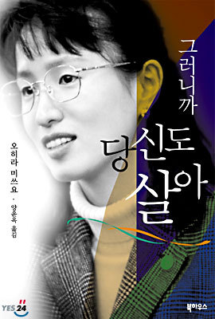

오히라씨에게 그런 극단적인 일을 하게 만든건 주변사람들의 무관심떄문이억슬거라생각이 듭니다. 아이들은 순수합니다.
순수하기 떄문에 어른들의 도움이 필요하구요.
오히라 미쓰요씨의 주변 어른들은 왕따 문제의 가해자와 피해자그 누구에게도 도움을 주지 않았습니다. 어른으로써의 의무를 지키지 않은 것 이지요.학시절에 당한 왕따, 할복자살 미수, 비행, 야쿠자 보스와의 결혼, 호스티스 생활 등
극도로 심한 왕따를 겪은 후 이어진 끊없는 암흑의 시간을 보내고 난 후
공인중개사를 시작으로 사법고시에 합격하는 그녀의 스토리를 통하여
그러니까 당신들도 살수있다는 메세지를 전하고 있다.
왕따문제가 사회적 문제로 크게 대두되는 최근에 그녀의 경험은 당하는 사람의 고통을 간접적으로 느끼게 해준다. 자연스레 자살까지 이어지는 현상도 알 수 있다. 하지만 그것이 얼마나 미련한 짓이라는 것도 알려주고 복수라는 것이 당한만큼 똑같이 되돌려주는 것이 아니라 그들보다 더 성공하는 모습을 보이는 것이 복수라는 것을 일깨워준다. 그녀 역시 그것을 알고 나서 방황의 길에서 벗어나 성공하게 되었다. 그녀와 비슷한 경험을 한 친구들은 그녀를 본보기로 삼아 방황하지 않고, 극단적인 생각을 배제하여 좋은 길로 나아갔으면 좋겠다.
산골마을 자연속에서 남편과 다운증후군 딸 하루카와 함께 행복한 삶을 살아가는
오히라 미쓰요에게 박수를 쳐주고 싶다
[출처] 그러니까 당신도 살아 - 오히라 미쓰요